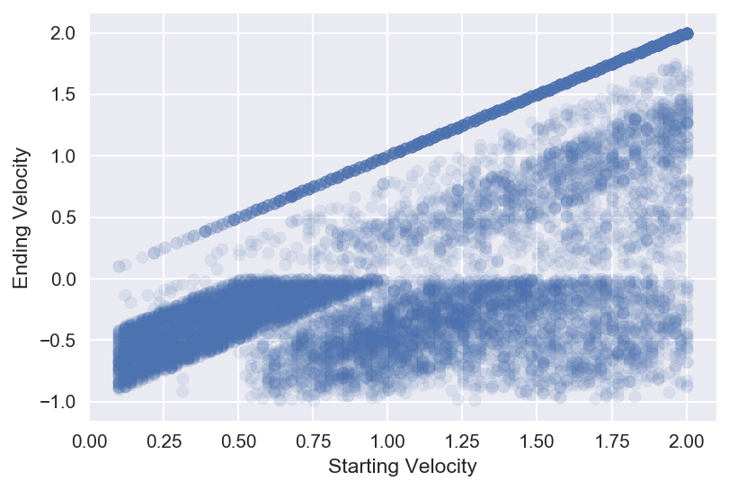

What is a Monte Carlo Simulation (Part 4)
Jan 22, 2018 - PythonThis is part 4 of a several part series dedicated to investigating how Monte Carlo can be a great tool. Part 1 introduces the concept of Monte Carlo. Part 2 teaches us how to do MC in Python. Part 3 explores how we can use Monte Carlo to attempt to outplay the odds in Video Poker. If you haven't read those yet, I recommend you start there.
How do physicists use Monte Carlo to simulate particle interactions?
Understanding how particles behave is hard. Really hard. "Dedicate your whole life just to figure how often neutrons scatter off of protons when they're going at this speed, but then slowly realizing that question is still too complicated and I can't answer it despite spending the last 30 years trying, so what if I just figure out how neutrons behave when I shoot them at objects rich with protons and then try to figure out what they're doing there and work backward to what the behavior would be if the protons weren't currently bonded with lithium. Oh SCREW IT I've got tenure so I'm just going to teach and write books about how terrible neutrons are..." hard.Due to this challenge, physicists almost always need to design experiments with extreme care. To do that, they need to be able to simulate what they expect will happen when they set up their experiments, so that they don't waste a bunch of time, money, and effort only to find out that their experiment is designed in a way that has no chance of working. The tool of choice to make sure the experiments have a chance at success is Monte Carlo. Physicists will design the experiments entirely in the simulation, then shoot particles into their detectors and see what happens based on what we currently know. This gives them a reasonable idea of what's going to happen in the experiment. Then they can design the experiment, run it, and see if it agrees with how we currently understand the world. It's a really cool system of using Monte Carlo to make sure that science is efficient.
A few programs that nuclear and particle physicists tend to use often are GEANT and Pythia. These are magnificent tools that have gigantic teams of people managing them and updating them. They're also so complicated that it's borderline uninstructive to look into how they work. To remedy that, we're going to build our own, much much much (much^1,000,000) simpler, version of GEANT. We'll only work in 1-dimension for now.
So before we get started, let's break down what the goal is (see next paragraph if the particle talk throws you off): we want to be able to create some block of material, then shoot a particle into it. The particle will move through the material and have a random chance of bouncing in the material. If it bounces it loses speed. Our ultimate goal is to figure out: based on the starting speed of the particle, how likely is it that it can get through the material? We'll then get more complicated and say, "what if there were two different materials stacked back to back?"
For those who think, "whoa, what's with the particle stuff, can you give me a metaphor that is more easy to understand?" Yes. Yes, I can. Imagine that you're shooting a bullet into a block of "bullet stopping material." Depending on how strong the material is, the bullet may or may not actually be stopped. We can model that bullet-protection-strength by using random numbers to decide if the bullet slows down after each step, if we assume we can break it's motion into tiny steps. We want to measure, how likely is it that the bullet makes it through the block. So in the physics parlance: the bullet is the particle, and the material is the block. Without further adieu, here is the Particle Simulator Monte Carlo Notebook. There are lots of comments and text blurbs to explain the methodology and why we're making the choices we do. Enjoy! 